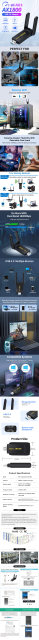

• High-Speed WiFi 6 Technology :Experience seamless internet connectivity with FENVI's 1800Mbps WiFi 6 USB Adapter, ensuring fast data transfer and smooth online experience.
• Dual Band 2.4G/5Ghz :This wireless receiver supports dual band frequency of 2.4G and 5Ghz, providing flexible networking options to suit your specific needs.
• External USB3.0 Interface :Equipped with an USB3.0 interface, this network card ensures easy and quick installation, enhancing your computing efficiency.
• Ethernet Lan Transmission :Supports Ethernet lan transmission, offering a reliable and high-speed connection for desktop applications.
• Versatile Compatibility :Designed for versatility, this network card is compatible with Win 10/11, making it a perfect choice for PC and laptop users.
• Robust Wireless Protocol :Adopts 802.11ac wireless protocol, guaranteeing stable and consistent wireless performance for all your online activities.
Chip: MT7921
Dual Band: 5Ghz/2.4Ghz;
Interface Type: USB 3.0
Transmission Rate: 1800Mbps (2.4Ghz-574 mbps; 5Ghz-1200 mbps)
Antenna:2*2dBiAntenna
Support System: Windows 10/ Windows 11
Download driver：https://www.fenvi.com/drive.html?keyword=FU-AX1800

Q&A
Q1: Compatible with AMD platform?
A1: Compatible ,not dependent on platform manufacturer
Q2:For Linux system?
A2:It is only compatible with Windows 10/11(64bit),
Q3:The function does not work,what should I do?
A3:Please download and install the driver.And then restart your computer.
Q4:Compatible with USB 2.0 interface?
A4:Yes, Compatible with USB2.0/USB1.1